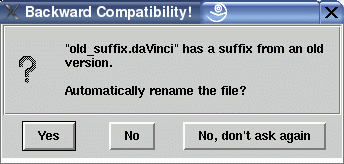

Backward compatibility of uDraw(Graph) 3.1
Starting with uDraw(Graph) 3.1 our product has a new name. Formerly it was known as daVinci (V1.0 to V2.1) or daVinci Presenter 3.0.x (supported and maintained by the company b-novative GmbH). Due to a trademark conflict we are not allowed to use the name daVinci longer than the year 2006. Therefore we have decided to rename our software to uDraw(Graph) immediately.
Unfortunately the name daVinci was used in several places of the program and therefore we had to change some system features that affect all users. Our usual backward compatibilty mode allows you to use your old applications and your old graphs without any changes. But it is recommended to change all the occurences of daVinci in your applications to be prepared for the year 2007.
Note: We do not guarantee that the backward compatibility mode explained on this page is integrated in our software longer than December 31, 2006.
The following changes have been made to the system:
-
Renamed binaries
The binary of uDraw(Graph) is now called uDrawGraph(.exe) and can be found and executed in the "bin" directory of the distribution. Additionally we had to rename the tool "gml2daVinci" to "gml2udg", it can be found in the same directory. For backward compatibility there should be links in the "bin" directory with the old names of the binaries.
-
Renamed environment variables
Nearly all environment variables had to be renamed. The main variable to specify the location of the uDraw(Graph) distribution directory is now called UDG_HOME. The other two variables are called UDG_ICONDIR and UDG_LANG now. But if you still use the old variable names uDraw(Graph) will use them until you set the new ones (recommended!).
-
File name suffix for graph files is now ".udg"
Formerly we have used the suffix ".daVinci" for graph files. This has been changed to ".udg". All files in the "samples/graphs" directory of the distribution have been renamed. But the File/Open... dialog will still load and show *.daVinci files if you choose type "Graph Files". If the backward compatibility mode discovers an old suffix in the file that should be opened and you have the right to rename it, a dialog window appears to ask you if renaming should be done for this file automatically.

Just say "Yes" or "No" as you like or "No, don't ask again" if you don't want to be asked this question again. If you use the menu Option/Save Options after selecting "No, don't ask again" your decision is rembered forever.
New graph files are always stored with the new suffix in the File/Save... dialog.
-
Renamed and changed API commands
The API command menu(view(daVinci_info)) is now menu(view(uDrawGraph_info)). But as expected the old command still works.
The API command special(version) now answers version("uDraw(Graph) 3.1").
-
Changes in the Tcl/Tk interface
In the Tcl/Tk interface the "daVinci" command has been renamed to "uDrawGraph". But using the old name of the command will still work.
-
Renamed internal files
uDraw(Graph) stores two internal files in the users home directory. These are named "$HOME/.uDrawGraph" for the options saved with menu Option/Save Options and "$HOME/.uDrawGraph<VERSION>" to rember that the user has already accepted the license conditions for the current <VERSION>. uDraw(Graph) will still load the options file with the old name "$HOME/.daVinci" until the user first saves the options in uDraw(Graph).